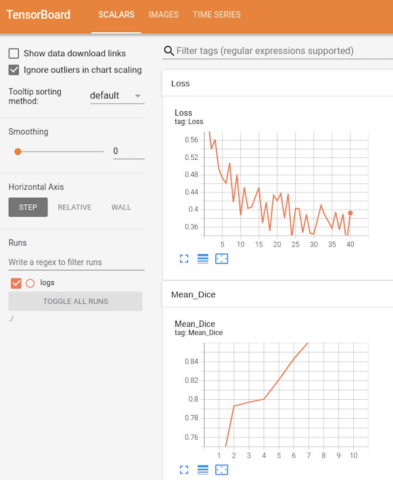
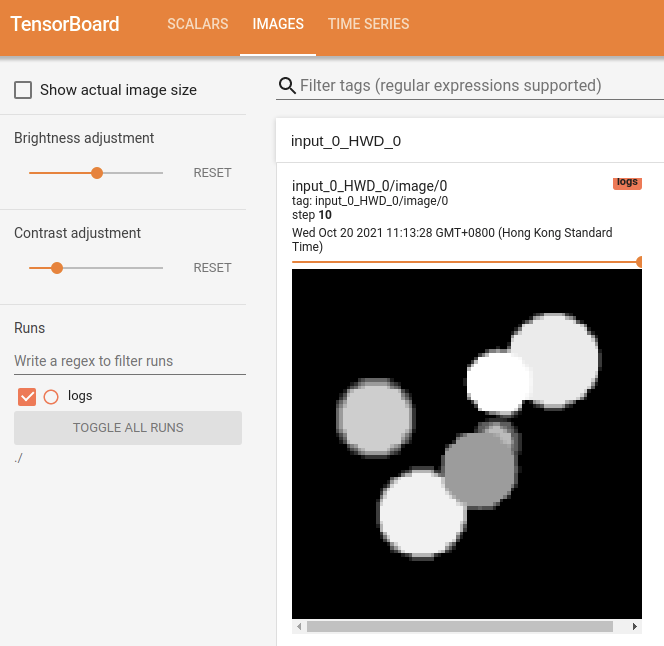
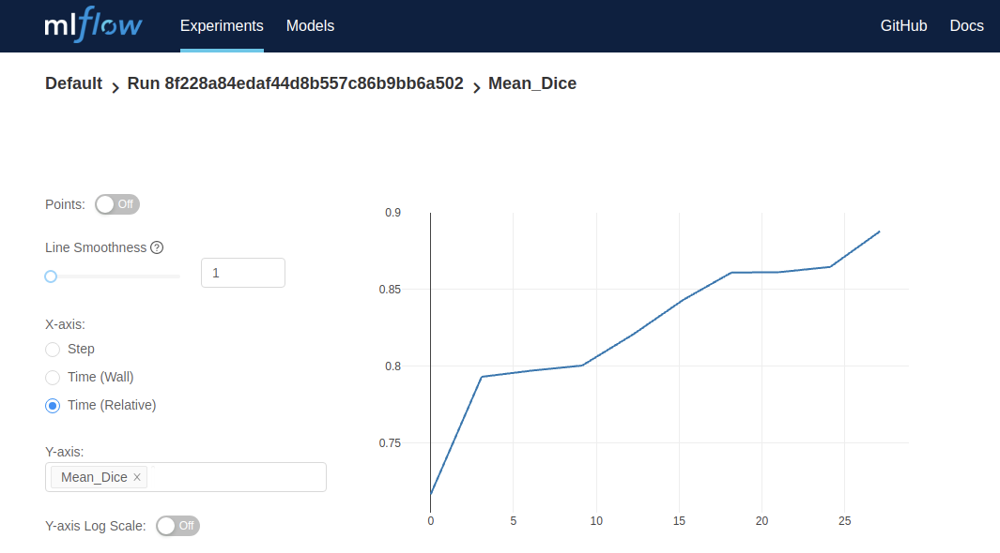

!python -c "import monai" || pip install -q "monai-weekly[ignite, nibabel, tensorboard, mlflow]"3D Segmentation with UNet
Setup environment
Setup imports
import glob
import logging
import os
from pathlib import Path
import shutil
import sys
import tempfile
import nibabel as nib
import numpy as np
from monai.config import print_config
from monai.data import ArrayDataset, create_test_image_3d, decollate_batch, DataLoader
from monai.handlers import (
MeanDice,
MLFlowHandler,
StatsHandler,
TensorBoardImageHandler,
TensorBoardStatsHandler,
)
from monai.losses import DiceLoss
from monai.networks.nets import UNet
from monai.transforms import (
Activations,
EnsureChannelFirst,
AsDiscrete,
Compose,
LoadImage,
RandSpatialCrop,
Resize,
ScaleIntensity,
)
from monai.utils import first
import ignite
import torch
print_config()MONAI version: 0.9.1
Numpy version: 1.22.4
Pytorch version: 1.13.0a0+340c412
MONAI flags: HAS_EXT = True, USE_COMPILED = False, USE_META_DICT = False
MONAI rev id: 356d2d2f41b473f588899d705bbc682308cee52c
MONAI __file__: /opt/monai/monai/__init__.py
Optional dependencies:
Pytorch Ignite version: 0.4.9
Nibabel version: 4.0.1
scikit-image version: 0.19.3
Pillow version: 9.0.1
Tensorboard version: 2.9.1
gdown version: 4.5.1
TorchVision version: 0.13.0a0
tqdm version: 4.64.0
lmdb version: 1.3.0
psutil version: 5.9.1
pandas version: 1.3.5
einops version: 0.4.1
transformers version: 4.20.1
mlflow version: 1.27.0
pynrrd version: 0.4.3
For details about installing the optional dependencies, please visit:
https://docs.monai.io/en/latest/installation.html#installing-the-recommended-dependencies
Setup data directory
You can specify a directory with the MONAI_DATA_DIRECTORY environment variable.
This allows you to save results and reuse downloads.
If not specified a temporary directory will be used.
directory = os.environ.get("MONAI_DATA_DIRECTORY")
if directory is not None:
os.makedirs(directory, exist_ok=True)
root_dir = tempfile.mkdtemp() if directory is None else directory
print(root_dir)/workspace/data/medicalSetup logging
logging.basicConfig(stream=sys.stdout, level=logging.INFO)Setup demo data
for i in range(40):
im, seg = create_test_image_3d(128, 128, 128, num_seg_classes=1)
n = nib.Nifti1Image(im, np.eye(4))
nib.save(n, os.path.join(root_dir, f"im{i}.nii.gz"))
n = nib.Nifti1Image(seg, np.eye(4))
nib.save(n, os.path.join(root_dir, f"seg{i}.nii.gz"))
images = sorted(glob.glob(os.path.join(root_dir, "im*.nii.gz")))
segs = sorted(glob.glob(os.path.join(root_dir, "seg*.nii.gz")))Setup transforms, dataset
# Define transforms for image and segmentation
imtrans = Compose(
[
LoadImage(image_only=True),
ScaleIntensity(),
EnsureChannelFirst(),
RandSpatialCrop((96, 96, 96), random_size=False),
]
)
segtrans = Compose(
[
LoadImage(image_only=True),
EnsureChannelFirst(),
RandSpatialCrop((96, 96, 96), random_size=False),
]
)
# Define nifti dataset, dataloader
ds = ArrayDataset(images, imtrans, segs, segtrans)
loader = DataLoader(ds, batch_size=10, num_workers=2, pin_memory=torch.cuda.is_available())
im, seg = first(loader)
print(im.shape, seg.shape)torch.Size([10, 1, 96, 96, 96]) torch.Size([10, 1, 96, 96, 96])Create Model, Loss, Optimizer
# Create UNet, DiceLoss and Adam optimizer
device = torch.device("cuda:0")
net = UNet(
spatial_dims=3,
in_channels=1,
out_channels=1,
channels=(16, 32, 64, 128, 256),
strides=(2, 2, 2, 2),
num_res_units=2,
).to(device)
loss = DiceLoss(sigmoid=True)
lr = 1e-3
opt = torch.optim.Adam(net.parameters(), lr)Create supervised_trainer using ignite
# Create trainer
trainer = ignite.engine.create_supervised_trainer(net, opt, loss, device, False)Setup event handlers for checkpointing and logging
# optional section for checkpoint and tensorboard logging
# adding checkpoint handler to save models (network
# params and optimizer stats) during training
log_dir = os.path.join(root_dir, "logs")
checkpoint_handler = ignite.handlers.ModelCheckpoint(log_dir, "net", n_saved=10, require_empty=False)
trainer.add_event_handler(
event_name=ignite.engine.Events.EPOCH_COMPLETED,
handler=checkpoint_handler,
to_save={"net": net, "opt": opt},
)
# StatsHandler prints loss at every iteration
# user can also customize print functions and can use output_transform to convert
# engine.state.output if it's not a loss value
train_stats_handler = StatsHandler(name="trainer", output_transform=lambda x: x)
train_stats_handler.attach(trainer)
# TensorBoardStatsHandler plots loss at every iteration
train_tensorboard_stats_handler = TensorBoardStatsHandler(log_dir=log_dir, output_transform=lambda x: x)
train_tensorboard_stats_handler.attach(trainer)
# MLFlowHandler plots loss at every iteration on MLFlow web UI
mlflow_dir = os.path.join(log_dir, "mlruns")
train_mlflow_handler = MLFlowHandler(tracking_uri=Path(mlflow_dir).as_uri(), output_transform=lambda x: x)
train_mlflow_handler.attach(trainer)Add Validation every N epochs
# optional section for model validation during training
validation_every_n_epochs = 1
# Set parameters for validation
metric_name = "Mean_Dice"
# add evaluation metric to the evaluator engine
val_metrics = {metric_name: MeanDice()}
post_pred = Compose([Activations(sigmoid=True), AsDiscrete(threshold=0.5)])
post_label = Compose([AsDiscrete(threshold=0.5)])
# Ignite evaluator expects batch=(img, seg) and
# returns output=(y_pred, y) at every iteration,
# user can add output_transform to return other values
evaluator = ignite.engine.create_supervised_evaluator(
net,
val_metrics,
device,
True,
output_transform=lambda x, y, y_pred: (
[post_pred(i) for i in decollate_batch(y_pred)],
[post_label(i) for i in decollate_batch(y)],
),
)
# create a validation data loader
val_imtrans = Compose(
[
LoadImage(image_only=True),
ScaleIntensity(),
EnsureChannelFirst(),
Resize((96, 96, 96)),
]
)
val_segtrans = Compose(
[
LoadImage(image_only=True),
EnsureChannelFirst(),
Resize((96, 96, 96)),
]
)
val_ds = ArrayDataset(images[21:], val_imtrans, segs[21:], val_segtrans)
val_loader = DataLoader(val_ds, batch_size=5, num_workers=8, pin_memory=torch.cuda.is_available())
@trainer.on(ignite.engine.Events.EPOCH_COMPLETED(every=validation_every_n_epochs))
def run_validation(engine):
evaluator.run(val_loader)
# Add stats event handler to print validation stats via evaluator
val_stats_handler = StatsHandler(
name="evaluator",
# no need to print loss value, so disable per iteration output
output_transform=lambda x: None,
# fetch global epoch number from trainer
global_epoch_transform=lambda x: trainer.state.epoch,
)
val_stats_handler.attach(evaluator)
# add handler to record metrics to TensorBoard at every validation epoch
val_tensorboard_stats_handler = TensorBoardStatsHandler(
log_dir=log_dir,
# no need to plot loss value, so disable per iteration output
output_transform=lambda x: None,
# fetch global epoch number from trainer
global_epoch_transform=lambda x: trainer.state.epoch,
)
val_tensorboard_stats_handler.attach(evaluator)
# add handler to record metrics to MLFlow at every validation epoch
val_mlflow_handler = MLFlowHandler(
tracking_uri=Path(mlflow_dir).as_uri(),
# no need to plot loss value, so disable per iteration output
output_transform=lambda x: None,
# fetch global epoch number from trainer
global_epoch_transform=lambda x: trainer.state.epoch,
)
val_mlflow_handler.attach(evaluator)
# add handler to draw the first image and the corresponding
# label and model output in the last batch
# here we draw the 3D output as GIF format along Depth
# axis, at every validation epoch
val_tensorboard_image_handler = TensorBoardImageHandler(
log_dir=log_dir,
batch_transform=lambda batch: (batch[0], batch[1]),
output_transform=lambda output: output[0],
global_iter_transform=lambda x: trainer.state.epoch,
)
evaluator.add_event_handler(
event_name=ignite.engine.Events.EPOCH_COMPLETED,
handler=val_tensorboard_image_handler,
)Run training loop
# create a training data loader
train_ds = ArrayDataset(images[:20], imtrans, segs[:20], segtrans)
train_loader = DataLoader(
train_ds,
batch_size=5,
shuffle=True,
num_workers=8,
pin_memory=torch.cuda.is_available(),
)
max_epochs = 10
state = trainer.run(train_loader, max_epochs)Visualizing Tensorboard logs
Expected training curve on TensorBoard:


Visualizing training status in MLFlow
As mlflow is not IPython component, please switch to the log_dir and execute command mlflow ui to launch MLFlow UI.
Expected training curve on MLFlow UI:

Cleanup data directory
Remove directory if a temporary was used.
if directory is None:
shutil.rmtree(root_dir)